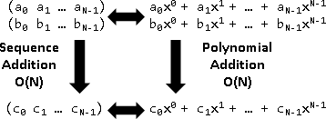
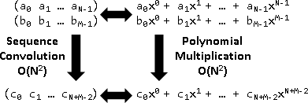
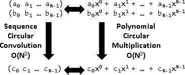
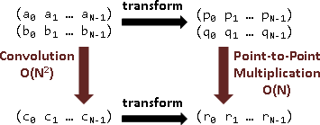
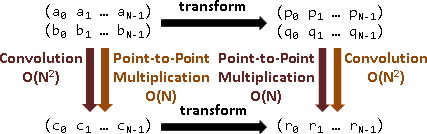
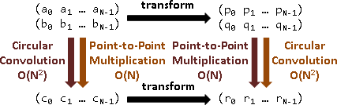
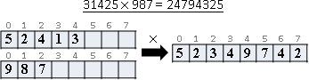
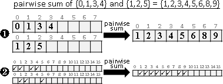
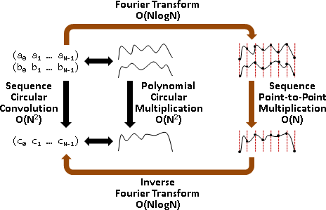

Polynomial Multiplication（Under Construction!）
多項式加法與減法 = 數列加法與減法
多項式加法
a₀ x⁰ + a₁ x¹ + a₂ x²
+) b₀ x⁰ + b₁ x¹ + b₂ x²
—————————————————————————————————————————
(a₀+b₀) x⁰ + (a₁+b₁) x¹ + (a₂+b₂) x²
數列加法 (a₀ a₁ a₂) + (b₀ b₁ b₂) = (a₀+b₀ a₁+b₁ a₂+b₂)
多項式乘法與除法 = 數列摺積與反摺積
多項式乘法，是數列的什麼呢？數學家以不斷位移的點積，兜出多項式乘法的結果，然後命名為摺積。
多項式乘法
a₀ x⁰ + a₁ x¹ + a₂ x²
×) b₀ x⁰ + b₁ x¹ + b₂ x²
——————————————————————————————————————————————————
a₀b₂ x² + a₁b₂ x³ + a₂b₂ x⁴
a₀b₁ x¹ + a₁b₁ x² + a₂b₁ x³
a₀b₀ x⁰ + a₁b₀ x¹ + a₂b₀ x²
——————————————————————————————————————————————————
c₀ x⁰ + c₁ x¹ + c₂ x² + c₃ x³ + c₄ x⁴
其中
c₀ = a₀b₀
c₁ = a₀b₁ + a₁b₀
c₂ = a₀b₂ + a₁b₁ + a₂b₀
c₃ = a₁b₂ + a₂b₁
c₄ = a₂b₂
數列摺積 (a₀ a₁ a₂) convolution (b₀ b₁ b₂) = (c₀ c₁ c₂ c₃ c₄) 其中 c₀ = (- - a₀ a₁ a₂ - - ) dot (b₂ b₁ b₀ - - - - ) c₁ = (- - a₀ a₁ a₂ - - ) dot (- b₂ b₁ b₀ - - - ) c₂ = (- - a₀ a₁ a₂ - - ) dot (- - b₂ b₁ b₀ - - ) c₃ = (- - a₀ a₁ a₂ - - ) dot (- - - b₂ b₁ b₀ - ) c₄ = (- - a₀ a₁ a₂ - - ) dot (- - - - b₂ b₁ b₀) 對齊一下 c₀: c₁: c₂: (- - a₀ a₁ a₂ - - ) (- - a₀ a₁ a₂ - - ) (- - a₀ a₁ a₂ - - ) (b₂ b₁ b₀ - - - - ) (- b₂ b₁ b₀ - - - ) (- - b₂ b₁ b₀ - - ) c₃: c₄: (- - a₀ a₁ a₂ - - ) (- - a₀ a₁ a₂ - - ) (- - - b₂ b₁ b₀ - ) (- - - - b₂ b₁ b₀)
Convolution
等長的兩串數列，做「對應項乘法」運算，得到一串數列。時間複雜度O(N)。
Pointwise Product:
a₀ a₁ a₂
(a₀ a₁ a₂) multiply (b₀ b₁ b₂) = ( × × × ) = (a₀b₀ a₁b₁ a₂b₂)
b₀ b₁ b₂
等長的兩串數列，做「點積」運算，得到一個值：對應項相乘後求和。時間複雜度O(N)。
Dot Product:
a₀ a₁ a₂
(a₀ a₁ a₂) dot (b₀ b₁ b₂) = × + × + × = a₀b₀ + a₁b₁ + a₂b₂
b₀ b₁ b₂
兩串數列，做「摺積」運算，得到一個數列：第二串數列頭尾顛倒，窮舉各種對齊方式，各做一次點積。至於第二串數列為何要頭尾顛倒？正是為了迎合多項式乘法！時間複雜度O(AB)。
Convolution: (a₀ a₁ a₂ a₃ a₄) convolution (b₀ b₁ b₂) = (c₀ c₁ c₂ c₃ c₄ c₅ c₆) c₀ = (- - a₀ a₁ a₂ a₃ a₄ - - ) dot (b₂ b₁ b₀ - - - - - - ) c₁ = (- - a₀ a₁ a₂ a₃ a₄ - - ) dot (- b₂ b₁ b₀ - - - - - ) c₂ = (- - a₀ a₁ a₂ a₃ a₄ - - ) dot (- - b₂ b₁ b₀ - - - - ) c₃ = (- - a₀ a₁ a₂ a₃ a₄ - - ) dot (- - - b₂ b₁ b₀ - - - ) c₄ = (- - a₀ a₁ a₂ a₃ a₄ - - ) dot (- - - - b₂ b₁ b₀ - - ) c₅ = (- - a₀ a₁ a₂ a₃ a₄ - - ) dot (- - - - - b₂ b₁ b₀ - ) c₆ = (- - a₀ a₁ a₂ a₃ a₄ - - ) dot (- - - - - - b₂ b₁ b₀)
摺積是很多次點積，第二串頭尾顛倒，各種位移。
多項式乘法有交換率、結合率、分配律，當然摺積也有。
Deconvolution
「反摺積」就是摺積的反運算，解摺積式子。
☐ convolution b = c ---> c deconvoution b = ☐
化作矩陣乘法，求反矩陣即可。
http://dsp.stackexchange.com/questions/15096/。
但是我不清楚如何求得摺積的反元素。
多項式循環乘法 = 數列循環摺積
緊接著引入「循環」的概念！多項式相乘，刻意讓次方循環。
多項式循環乘法
a₀ x⁰ + a₁ x¹ + a₂ x²
×) b₀ x⁰ + b₁ x¹ + b₂ x²
—————————————————————————————————————————————————————
a₀b₂ x² + a₁b₂ x³ + a₂b₂ x⁴
a₀b₁ x¹ + a₁b₁ x² + a₂b₁ x³
a₀b₀ x⁰ + a₁b₀ x¹ + a₂b₀ x²
—————————————————————————————————————————————————————
a₁b₂ x⁰ + a₂b₂ x¹ + a₀b₂ x²
a₂b₁ x⁰ + a₀b₁ x¹ + a₁b₁ x²
a₀b₀ x⁰ + a₁b₀ x¹ + a₂b₀ x²
—————————————————————————————————————————————————————
c₀ x⁰ + c₁ x¹ + c₂ x²
其中
c₀ = a₁b₂ + a₂b₁ + a₀b₀
c₁ = a₂b₁ + a₀b₁ + a₁b₁
c₂ = a₀b₀ + a₁b₀ + a₂b₀
也就是
(a₀ a₁ a₂) (a₀ a₁ a₂) (a₀ a₁ a₂)
dot x⁰ + dot x¹ + dot x²
(b₀ b₂ b₁) (b₁ b₀ b₂) (b₂ b₁ b₀)
數列循環摺積 (a₀ a₁ a₂) circular convolution (b₀ b₁ b₂) = (c₀ c₁ c₂) 其中 c₀ = (a₀ a₁ a₂) dot (b₀ b₂ b₁) c₁ = (a₀ a₁ a₂) dot (b₁ b₀ b₂) c₂ = (a₀ a₁ a₂) dot (b₂ b₁ b₀)
Circular Convolution
等長的兩串數列，做「循環摺積」運算，得到一串數列：與摺積大同小異，超出數列的部分，改成頭尾循環。時間複雜度O(N^2)。
第二串數列由第0項到第N-1項輪流作為首項、頭尾顛倒、頭尾循環。
circular
(a₀ a₁ a₂ a₃ a₄) convolution (b₀ b₁ b₂ b₃ b₄) = (c₀ c₁ c₂ c₃ c₄)
c₀ = (a₀ a₁ a₂ a₃ a₄) dot (b₀ b₄ b₃ b₂ b₁)
c₁ = (a₀ a₁ a₂ a₃ a₄) dot (b₁ b₀ b₄ b₃ b₂)
c₂ = (a₀ a₁ a₂ a₃ a₄) dot (b₂ b₁ b₀ b₄ b₃)
c₃ = (a₀ a₁ a₂ a₃ a₄) dot (b₃ b₂ b₁ b₀ b₄)
c₄ = (a₀ a₁ a₂ a₃ a₄) dot (b₄ b₃ b₂ b₁ b₀)
c0: c1: c2: (a₀ a₁ a₂ a₃ a₄) (a₀ a₁ a₂ a₃ a₄) (a₀ a₁ a₂ a₃ a₄) (b₀ b₄ b₃ b₂ b₁) (b₁ b₀ b₄ b₃ b₂) (b₂ b₁ b₀ b₄ b₃) c3: c4: (a₀ a₁ a₂ a₃ a₄) (a₀ a₁ a₂ a₃ a₄) (b₃ b₂ b₁ b₀ b₄) (b₄ b₃ b₂ b₁ b₀)
Convolution Theorem【尚無正式名稱】
多項式與數列互相轉換。
a₀x⁰ + a₁x¹ + a₂x² <---> (a₀ a₁ a₂)
數列轉換成多項式。
(a₀ a₁ a₂) ----> a₀x⁰ + a₁x¹ + a₂x²
數列轉換成多項式，可以看成點積，可以看成線性變換。
線性變換矩陣
A = [ x⁰ x¹ x² ]
數列
[ a₀ ]
a = [ a₁ ]
[ a₂ ]
數列轉換成多項式
[ a₀ ]
Aa = [ x⁰ x¹ x² ] [ a₁ ] = a₀x⁰ + a₁x¹ + a₂x²
[ a₂ ]
這種線性變換有個特性：「變換前的摺積 = 變換後的乘法」。
A = [ x⁰ x¹ x² ]
[ a₀ ] [ b₀ ]
a = [ a₁ ] b = [ b₁ ]
[ a₂ ] [ b₂ ]
p = Aa = (a₀x⁰ + a₁x¹ + a₂x²)
q = Ab = (b₀x⁰ + b₁x¹ + b₂x²)
pq = Aa Ab = (a₀x⁰ + a₁x¹ + a₂x²) (b₀x⁰ + b₁x¹ + b₂x²)
= (a convolution b) 然後添上 [ x⁰ x¹ x² x³ x⁴ ]
= A(a convolution b) a與b末端補零，A末端補項。
次方值乘上任意倍率，此特性一樣成立。
A = [ x⁰ x¹ x² ] A = [ x⁰ x⁵ x¹⁰ ] A = [ x⁰ x⁻⁷ x⁻²¹ ] A = [ x⁰ x⁰ x⁰ ]
所有元素一齊乘上任意倍率，此特性一樣成立。
A = [ 7x⁰ 7x¹ 7x² ] A = [ -x⁰ -x⁵ -x¹⁰ ] A = [ 0 0 0 ]
從一個橫列推廣到一個矩陣，此特性一樣成立。
[ 7x⁰ 7x¹ 7x² ]
A = [ -x⁰ -x⁵ -x¹⁰ ]
[ x⁰ x⁻⁷ x⁻²¹ ]
Aa multiply Ab = A(a convolution b)
結論就是：
Cicular Convolution Theorem【尚無正式名稱】
接下來繼續補強矩陣，除了滿足「變換前的摺積 = 變換後的乘法」，也要滿足「變換前的乘法 = 變換後的摺積」！
從數學來看，補強性質，達成了對稱之美；從計算學來看，補強限制，極可能產生特殊演算法。
那麼就得讓A擁有反矩陣A⁻¹，而且A和A⁻¹都具備上個段落提到的特性。一種嘗試是正規正交矩陣：A⁻¹ = Aᵀ，前述特性變成了行與列同時成立，容易觀察。
實數系統下，x次方漸增，數值越來越大，導致基底不可能垂直（內積不可能為零）。很不幸的，這種矩陣不存在。
[ x⁰ x⁰ x⁰ x⁰ .. ]
-1 T [ x⁰ x¹ x² x³ .. ]
A = A = A = [ x⁰ x² x⁴ x⁶ .. ]
[ x⁰ x³ x⁶ x⁹ .. ]
[ : : : : ]
Aa multiply Ab = A(a convolution b)
Aa convolution Ab = A(a multiply b)
折衷的方式是令x的次方產生循環，讓數值能夠變小，使得基底互相垂直、內積是零。（用數學術語來說：從open set改成closed set。）
複數系統下，把x設定成ei⋅2π/N（或其倒數e-i⋅2π/N），令x的次方產生循環。此即「傅立葉轉換」。
Fourier Transform: x = e-i⋅2π/N; k = 1/sqrt(N); N is size of matrix
[ x⁰ x⁰ x⁰ x⁰ .. ] [ x⁻⁰ x⁻⁰ x⁻⁰ x⁻⁰ .. ]
[ x⁰ x¹ x² x³ .. ] -1 [ x⁻⁰ x⁻¹ x⁻² x⁻³ .. ]
A = k [ x⁰ x² x⁴ x⁶ .. ] A = k [ x⁻⁰ x⁻² x⁻⁴ x⁻⁶ .. ]
[ x⁰ x³ x⁶ x⁹ .. ] [ x⁻⁰ x⁻³ x⁻⁶ x⁻⁹ .. ]
[ : : : : ] [ : : : : ]
Aa multiply Ab = A(a circular convolution b)
Aa circular convolution Ab = A(a multiply b)
餘數系統下，則是把x設定成任意一個原根（或其倒數），令x的次方產生循環。此即「數論轉換」。
Number Theoretic Transform: x = primitive root (mod n)
[ x⁰ x⁰ x⁰ x⁰ .. ] [ x⁻⁰ x⁻⁰ x⁻⁰ x⁻⁰ .. ]
[ x⁰ x¹ x² x³ .. ] -1 [ x⁻⁰ x⁻¹ x⁻² x⁻³ .. ]
A = [ x⁰ x² x⁴ x⁶ .. ] A = [ x⁻⁰ x⁻² x⁻⁴ x⁻⁶ .. ]
[ x⁰ x³ x⁶ x⁹ .. ] [ x⁻⁰ x⁻³ x⁻⁶ x⁻⁹ .. ]
[ : : : : ] [ : : : : ]
Aa multiply Ab = A(a circular convolution b)
Aa circular convolution Ab = A(a multiply b)
原本的特性，也變得循環：「變換前的循環摺積 = 變換後的乘法」、「變換前的乘法 = 變換後的循環摺積」！
引入時域與頻域的觀念：「頻域的乘法 = 時域的循環摺積」、「頻域的循環摺積 = 時域的乘法」！
Circular Convolution的快速演算法
Polynomial Circular Multiplication的快速演算法
正向傅立葉轉換、數論轉換需時O(NlogN)，對應項相乘需時O(N)，逆向傅立葉轉換、數論轉換需時O(NlogN)。總時間複雜度為O(NlogN)。
傅立葉轉換的弱點是浮點數誤差。數論轉換的弱點是數值大小不得超過模數大小。
注意到，快速傅立葉轉換、快速數論轉換，數列長度必須是2的次方。當數列長度不是2的次方，千萬不能直接補零到2的次方。
正確的循環摺積計算結果：
circular
(a₀ a₁ a₂) convolution (b₀ b₁ b₂) = (c₀ c₁ c₂)
c₀ = a₀b₀ + a₁b₂ + a₂b₁
c₁ = a₀b₁ + a₁b₀ + a₂b₂
c₂ = a₀b₂ + a₁b₁ + a₂b₀
長度補到2的次方，計算結果完全不同：
circular
(a₀ a₁ a₂ 0) convolution (b₀ b₁ b₂ 0) = (d₀ d₁ d₂ d₃)
d₀ = a₀b₀ + a₂b₂
d₁ = a₀b₁ + a₁b₀
d₂ = a₀b₂ + a₁b₁ + a₂b₀
d₃ = a₁b₂ + a₂b₁
正確的方式：先補零直到不受循環影響，再補零直到長度是2的次方，最後讓輸出數列循環。
想要計算 circular (a₀ a₁ a₂) convolution (b₀ b₁ b₂) = (c₀ c₁ c₂) 改為計算 circular (a₀ a₁ a₂ 0 0) convolution (b₀ b₁ b₂ 0 0) = (d₀ d₁ d₂ d₃ d₄) 長度補到2的次方 circular (a₀ a₁ a₂ 0 0 0 0 0) convolution (b₀ b₁ b₂ 0 0 0 0 0) = (d₀ d₁ d₂ d₃ d₄ 0 0 0) 最後讓輸出數列循環 c₀ = d₀ + d₃ c₁ = d₁ + d₄ c₂ = d₂
Convolution的快速演算法
Polynomial Multiplication的快速演算法
運用循環摺積，計算摺積。
想要計算 (a₀ a₁ a₂ a₃) convolution (b₀ b₁ b₂) = (c₀ c₁ c₂ c₃ c₄ c₅) 改為計算 circular (a₀ a₁ a₂ a₃ 0 0) convolution (b₀ b₁ b₂ 0 0 0) = (c₀ c₁ c₂ c₃ c₄ c₅ 0) 長度補到2的次方 circular (a₀ a₁ a₂ a₃ a₄ 0 0 0) convolution (b₀ b₁ b₂ 0 0 0 0 0) = (c₀ c₁ c₂ c₃ c₄ c₅ 0 0) 截斷輸出數列至正確長度 (c₀ c₁ c₂ c₃ c₄ c₅ 0 0) -> (c₀ c₁ c₂ c₃ c₄ c₅)
範例：大數乘法
大數乘法即是多項式乘法！
傅立葉轉換、數論轉換得以計算大數乘法，時間複雜度從O(N^2)降為O(NlogN)。
範例：兩兩和（Pairwise Sum）（X+Y Problem）
甲集合，乙集合，只有整數。甲取一個數，乙取一個數，相加，會是哪些數？
集合的資料結構，使用循序儲存。窮舉法與排序為O(N^2)。
集合的資料結構，使用索引儲存。時間複雜度為O(RlogR)，R為數字範圍。
摺積觀點：整數加法變成位移，兩兩和變成摺積。
多項式觀點：集合變成多項式，元素值變成x的次方，出現與否變成x的係數（未出現是0，出現是1以上），兩兩和變成多項式乘法。
範例：樣式匹配（Pattern Matching）
經典問題「從一個陣列當中，搜尋一個值」，解法是循序搜尋（窮舉法）、先排序再二分搜尋、Sqrt分解、偽線段樹、四元樹。
進階問題「從一個陣列當中，搜尋一串連續數列」，解法是字串匹配、多重解析度匹配（金字塔）、樹套樹、傅立葉轉換。此處討論最後一種方法。
http://www.cs.jhu.edu/~misha/Spring15/ https://maskray.me/blog/2016-10-03-discrete-fourier-transform http://www.jjj.de/fxt/fxtbook.pdf
min sum (f[t+r] - g[t])² = min sum f[t+r]² + g[t]² - 2 ⟪f[t+r],g[t]⟫
r t r t
‖f - g‖² = f² + g² - 2 ⟪f,g⟫
^^^^^
預計算兩串數列當中每個數字的平方、預計算所有可能的點積（摺積）。而摺積可以用傅立葉轉求得。然後就可以迅速求得a² + b² - 2ab。整體時間複雜度O(NlogN)。
可以求匹配（找到零）、求相似度（找最小值）。
用於字串匹配，把字元看成ASCII數值。字串末端補零，避免循環匹配。
用於形狀匹配，把形狀看成「Radical Function」。循環函數，不必補零。形狀旋轉等同於數列循環位移，不影響結果。
UVa 12298 ICPC 4671 5705 7159